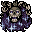

衰弱の矢 Bolt of Draining
英語版 CrawlWiki の記事「Bolt of Draining」(0.30 向け、2026-05-24 版)の翻訳です。原文の著者は編集履歴をご覧ください。
この記事は 0.30 の時点の内容で、最新の 0.34 とは違うところがあるかもしれません。
| 貫通する負のエネルギーの矢を放ち、当たった生き物を衰弱させる。 |
衰弱の矢はモンスター専用の呪文だ。負のエネルギーのボルトを放ち、通り道にいる生き物すべてにダメージを与えて衰弱させる。プレイヤーの場合、負のエネルギーへの耐性があれば、この呪文のダメージと衰弱が 50%(rN+)、75%(rN++)、100%(rN+++)減る。衰弱すると(十分な XP を得るまで)最大 HP が下がるので、かなり厄介だ。
衰弱の矢を唱える敵は次のとおり。
- e
 闇エルフの死の魔術師(ダメージ3d24)
闇エルフの死の魔術師(ダメージ3d24) - 6
 悪魔の血族の魂学者(ダメージ3d22)
悪魔の血族の魂学者(ダメージ3d22) - W
 アイドロン(ダメージ3d21)
アイドロン(ダメージ3d21) - L
 ハラジッドの魔法使い(ダメージ3d25)
ハラジッドの魔法使い(ダメージ3d25) - H
 女郎蜘蛛(ダメージ3d20)
女郎蜘蛛(ダメージ3d20) - z
 笑う頭蓋骨(ダメージ3d(13-26))
笑う頭蓋骨(ダメージ3d(13-26)) - p
 死人使い(ダメージ3d18)
死人使い(ダメージ3d18) - o
 ネルガレ(ダメージ3d18)
ネルガレ(ダメージ3d18) - *
 エントロピーの球体(ダメージ3d36)
エントロピーの球体(ダメージ3d36) - o
 オークの魔道士(ダメージ3d17)
オークの魔道士(ダメージ3d17) - D
 シャドウドラゴン(ダメージ3d24)
シャドウドラゴン(ダメージ3d24) - Q
 天狗の掠奪者(ダメージ3d24)
天狗の掠奪者(ダメージ3d24) - 1

ツィツィミトル(ダメージ3d29) - V
 吸血鬼の魔術師(ダメージ3d18)
吸血鬼の魔術師(ダメージ3d18)

次の敵は、呪文セットによっては衰弱の矢を唱えることがある。
- &
 パンデモニウムの君主(5.2%の確率)
パンデモニウムの君主(5.2%の確率)